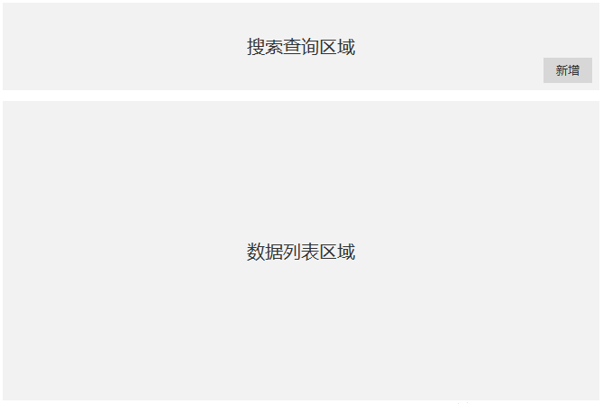
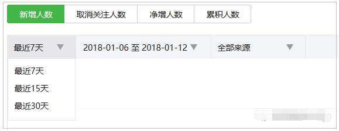
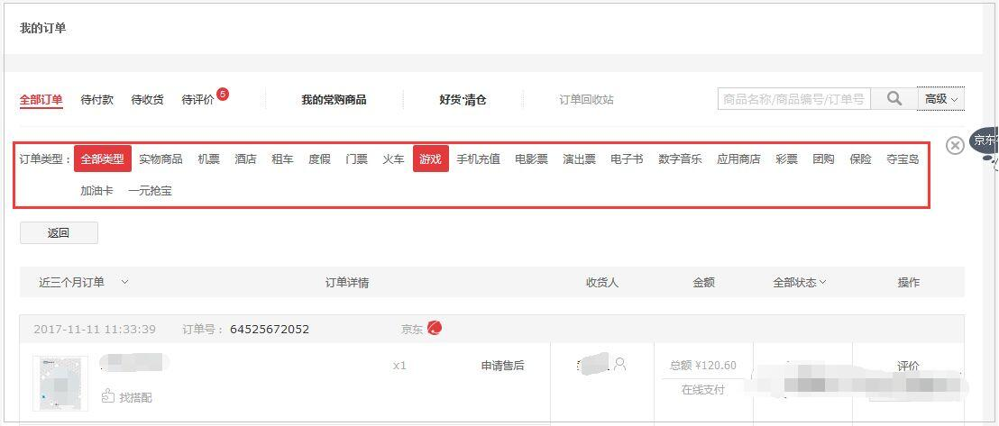
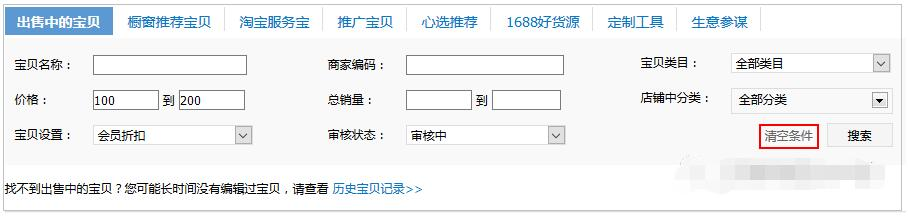
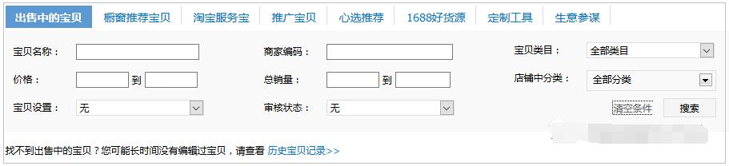
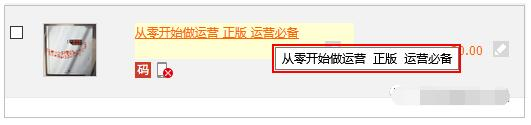
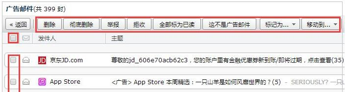
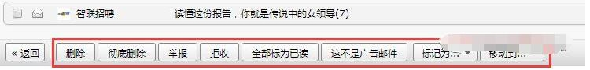

如何设计数据列表页
分享人：赵跃
一、什么是数据列表页
二、如何确定把哪些字段放到搜索查询区域?
三、如何把字段放到搜索查询区域？
四、一些骚操作
五、如何确定把哪些字段放到数据列表区域?
六、如何把字段放到数据列表区域？
七、参考文献
一、什么是数据列表页
在前后台产品设计中，数据列表页是非常常见的一个页面，该页面负责展示数据，并提供搜索查询功能来供用户查询数据。在数据非常多的情况下，如何让用户快速地找到自己想要的数据，成为设计数据列表页的一个重要原则。
数据列表页通常可以分为两部分：搜索查询区域、数据列表区域。
该页面的常见布局如下图所示：

搜索查询区域包括各种供查询的字段，其作用是帮助用户快速找到所需的数据。
数据列表区域用来展示数据的具体信息，其作用是让用户快速查看数据的相关信息。
二、如何确定把哪些字段放到搜索查询区域?
可以按照以下两步来进行：
1、第一步，首先要获取放到搜索查询区域字段的候选项。因为我们是要对数据进行搜索查询，要用到数据的属性，因此在这一步将新建数据时涉及的字段全部列为候选项；
2、第二步，对这些字段候选项进行筛选过滤。因为数据的字段可能会有很多，如果把所有的字段都列出来供查询，不但占用空间，而且用户使用起来也不太方便，会降低操作效率。
那么如何进行筛选过滤呢？有以下几个原则：
选择可唯一确定数据的字段，这样可以让用户快速定位到自己想要的数据；如数据的id、邮箱账号；
选择用户可方便记忆内容的字段，在数据的id比较长的情况下，用户更倾向于使用自己能记住的内容；
需要注意的是，这跟第一条并不冲突，而是应用于不同的场景，第一条适用于精确定位数据；第二条适用于模糊查询。
选择用户比较重视的数据属性字段。因为用户会对数据的某些字段属性比较重视，数据变多之后就需要根据这些字段来查询数据。
这就需要在前期跟后台用户沟通好，然后将这些字段放到搜索查询区域。
尽量多使用提供选项的筛选字段。手动输入的筛选字段可以适当使用，但是不要过多，否则没有意义。
三、如何把字段放到搜索查询区域？
在上一步，我们获得了要把哪些字段放到搜索查询区域。接下来，我们就要讨论在将字段放到搜索查询区域时的一些注意事项。
1、搜索字段的设计
搜索字段可以灵活方便的对数据进行查询，一般来说搜索字段至少要支持对数据id和数据名称的搜索；
如果能支持更多字段的搜索则更好。最好的情况是各种字段都支持，那么只需要这一个搜索字段就行了；
建议支持同时输入多个数据id、数据名称（以某种符号分割）进行查询；可以事半功倍提升用户效率。
2、提供选项的筛选字段的设计
将这些字段放到搜索查询区域时，要保证提供的选项要和新建数据时该字段的选项一致，这样才能保证查询的准确性。
举例：比如说一个商品数据在新建时，“适合年龄”选项为“0-3岁”、“4-8岁”、“9-16岁”、“17岁及以上”；那么在将此字段作为搜索查询项时，也要将选项设置为“0-3岁”、“4-8岁”、“9-16岁”、“17岁及以上”。
唯一的不同，在于作为搜索查询项时，还要增加一个“全部”选项，作为默认选择，因为在默认情况下，展示的数据是全部年龄段的数据。
3、时间筛选字段的设计
时间筛选字段一般是对某个时间段的查询，要有开始时间和结束时间。
时间筛选字段的时间选择维度要大于等于新建数据时记录的时间维度。
举例：比如说新建数据时时间记录精确到了秒，那么时间筛选字段可以精确到秒，也可以模糊到分钟、小时等大维度；
但是反过来：如果新建数据时记录精确到了小时，但是时间筛选字段精确到了分钟或者秒，就会造成数据查询不准确。
要考虑到进行时间筛选时，开始时间和结束时间缺省时的处理方式。可以简单地提醒用户时间缺失，让用户补充完整。
我们还有另外一种更好的解决方式：开始时间缺省时，默认是最开始的时间；结束时间缺省时，默认是最新的时间。
可以将用户常用的时间段抽离出来作为选项，比如“今天”、“最近三天”、“最近一周”、“最近一个月”，用户点击可以快速设置时间段，方便快捷。
举例：微信公众平台查看“用户分析”的“新增用户”时，就支持这种方式，如下图

4、搜索查询字段的隐藏设计
虽然我们最开始对放在搜索查询区域的字段进行过筛选过滤，但是不排除数据涉及到的字段太多，过滤之后还是字段很多的情况。
在这里，我们可以再对这些字段进行划分：将那些重要的、用户比较关注的字段显示地放在搜索查询区域，而将那些不太重要的、用户偶尔会关注的字段隐藏的放在搜索查询区域，并保留一个入口开关。
这样既能让页面看上去不是很臃肿，也能支持一些特殊的搜索查询需求。
举例：京东在“我的订单”页面提供了一些简单地查询条件，如果用户想进一步地查询，可以点击“高级”，按照订单类型进行查询。如图：


四、一些骚操作
1、如果用户每次查询，使用的搜索查询字段都比较多而且使用的字段都差不多的情况下，可以考虑增加一个保存搜索查询条件的功能：
将这些字段打包成一个快捷键，下次点击快捷键可以根据这些搜索查询字段进行快速查询。
2、如果用户每次查询的条件都不一样，而且每次使用的搜索查询字段比较多的情况下，可以考虑增加一个批量清空的功能，点击可以快速将所选的字段恢复成原始状态。
举例：淘宝“出售中的宝贝”查询就支持“清空条件”，将已经选择的搜索查询字段内容恢复成默认状态。如图：


3、虽然我们在这里讨论的是搜索查询区域，但是在这部分还可以增加“新增数据”的入口。
因为在无法找到符合条件的数据情况下，有很大可能接下来就要新增符合条件的数据。
新增数据的入口位置一般在查询按钮旁边。举例：微信公众平台的“素材管理”就是这样的设计。

五、如何确定把哪些字段放到数据列表区域?
与上面的搜索查询有些类似，也是按照以下两步来进行：
1、第一步，首先要获取放到数据列表区域字段的候选项。因为我们是要展示数据的字段属性，因此在这一步将新建数据时涉及的字段全部列为候选项；
2、第二步，对这些字段候选项进行筛选过滤。因为数据的字段可能会有很多，如果把所有的字段都列出来供展示，不但占用页面空间，而且用户使用起来也不太方便，会降低操作效率。
那么如何进行筛选过滤呢？有以下几个原则：
选择可唯一确定数据的字段，这样可以让用户快速区分数据，如数据id、邮箱账号等；
选择用户比较重视的数据属性字段。因为数据的字段可能会很多，用户会对其中的某些字段属性比较重视。
这就需要在前期跟后台用户沟通好，然后将这些比较重视的字段放到数据列表区域。
比方说，后台用户比较重视数据的分类信息，那么就需要在数据列表区域将“分类”字段加上。
对于那些用户不太关注的，没有展示到数据列表区域的字段，可以通过“查看”或“修改”操作通过新开页面来查看这些字段的具体信息。
虽然数据列表区域的字段和搜索查询区域的字段选取方式有些相似，但是不尽相同。
两者的区别：前者更关注单个数据的信息查看；后者更关注所有数据的查询。搜索查询的字段可能要比数据列表区域的字段要多。
六、如何把字段放到数据列表区域？
在将字段放到数据列表区域时，有以下几个注意事项。
1、用户对每个需要放到数据列表区域的字段关注程度是不一样的。
前期需要跟用户沟通好字段的关注度，然后按照关注度从高到底依次对其进行排列展示。即将关注度高的字段放到最前面。
2、如果用户需要在数据列表显示的字段过多，页面无法显示全部，则可以像Excel表格那样“冻结拆分窗格”，
通过固定展示一些重要的字段列，其他的字段列可以通过左右拖动鼠标的方式来查看。
3、在字段列很多的情况下，每一列的宽度可能会很小，这样某些内容多的字段值就无法显示完整，如果要通过“查看”操作来新开页面查看的话，则过于繁琐。
在这里，我们可以将其设计成为如果内容超过字段宽度，则超过部分以“…”显示，同时，鼠标hover上去，则显示全部内容。举例：淘宝的商品名称就采用了这种设计方式。

4、因为数据会越来越多，所有的数据不可能一页展示完全，这就需要进行分页设计。分页设计时要考虑以下两点：
每页展示的数据数量。一般来说，每页展示的数据最好能一屏显示，这样用户就不用下拉查看。
如果确实有特殊需求，每页展示的数据一屏显示不了，需要下拉展示，那么就需要考虑将表头（即表的第一行，显示每列的字段值名称）冻结展示，这样用户在下拉的时候也能知道每个值对应的含义。
更加灵活的是用户可以自定义每页显示地数据数量，这个可以视具体业务需求来决定要不要这样做。
页码选择和跳转。有了分页，就需要提供让用户跳转不同页码的功能。如果每页展示的数据比较多，可以考虑在表头和表尾同时提供页码选择和跳转的功能
在页码部分至少要展示当前页（当前在哪一页）、页码总数和数据总量（一共有多少条数据）这三部分的信息。
5、排序功能。
如果用户需要对某个字段的值按照某种顺序排列，那么可以针对这一个字段列提供排序功能。
需要注意的是这种字段的值必须是能比较的，比方说大小、早晚等。同时，要提供正向、反向、默认这三种排序方式。
数据列表页中的数据需要有一个默认排序规则，这需要提前跟用户沟通清楚。
比如说：按创建时间倒序排列、按更新时间倒序排列、按某个字段值从大到小排列等。
6、批量处理。
有的时候我们需要对数据列表的多个数据进行批量处理，在批量处理之前，我们需要对这些数据进行选择。
这就要求每行数据都支持被选择，同时也可以提供全部选择按钮。
需要注意的是，全部选择的只是当前页的所有数据，其他页的数据在当前页无法被全部。
批量处理的操作建议在表头和表尾都进行放置，这样可以避免来回滚动页面，提升工作效率。
举例：QQ邮箱支持单个选择、全部选择、批量处理操作在表头和表尾都有设置。


7、一般来说，要想修改数据列表中的某个字段值，需要点击“修改”操作进入修改页面进行修改。
但是为了提升工作效率，如果该字段的值不复杂，也可以在数据列表页进行修改操作。如数值的改动等简单的操作。
“查看”操作。因为数据列表页展示的数据字段有限，不可能将所有的字段信息展示。
因此需要提供“查看”操作，新开页面来查看该条数据的详细字段信息；
“修改”操作。如果要修改数据的字段信息，除了简单的能在数据列表页修改外，其他的字段还需要通过“修改”操作进入到修改页面来进行修改；
七.参考文献
后台产品：数据列表页设计--------------人人都是产品经理